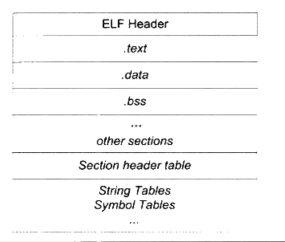
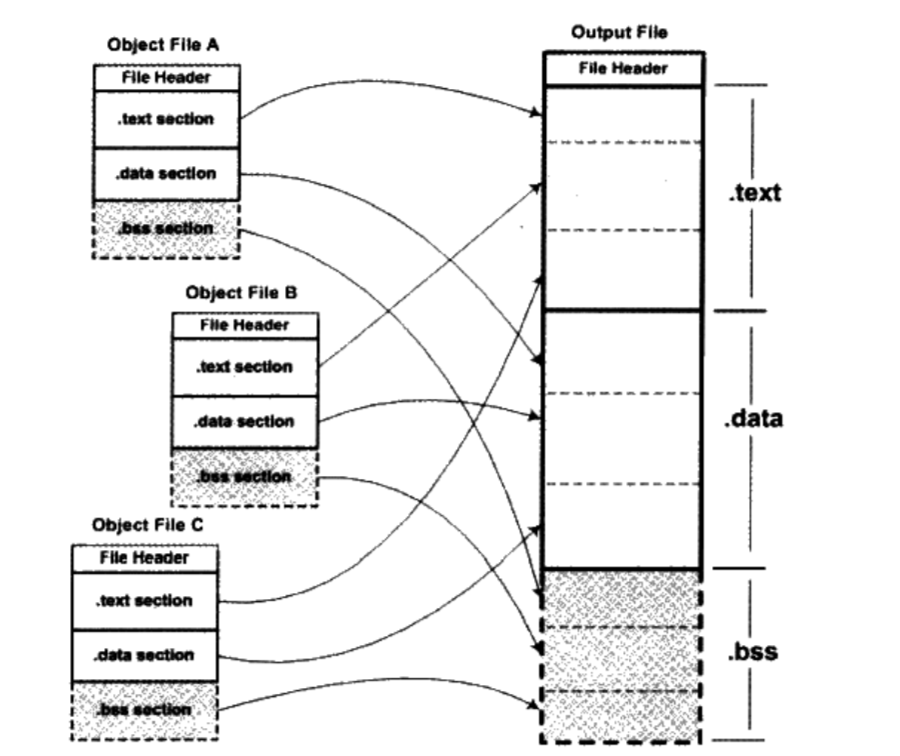
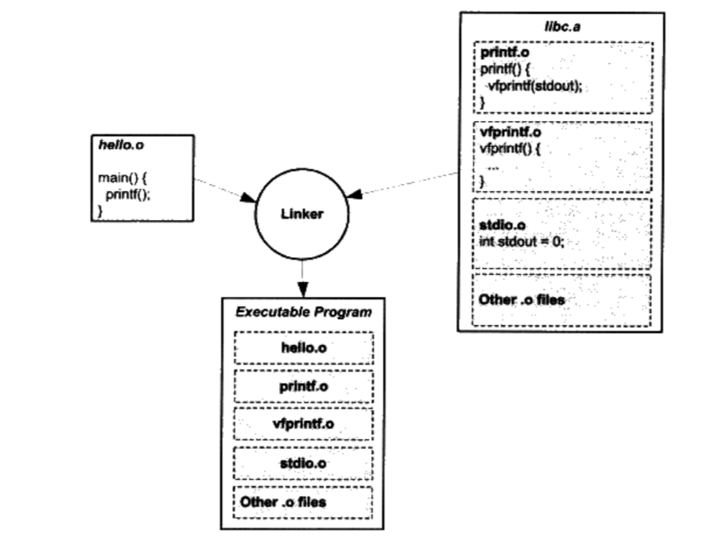
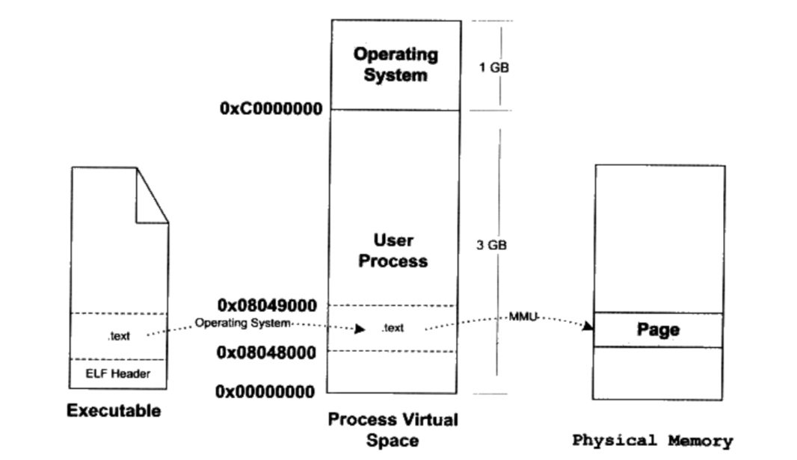
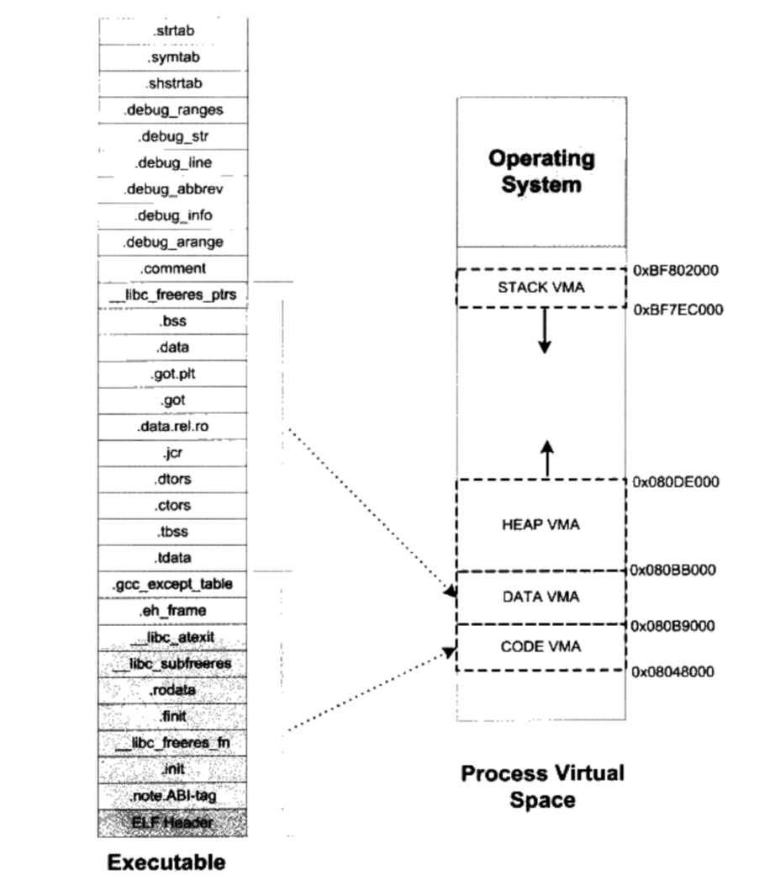
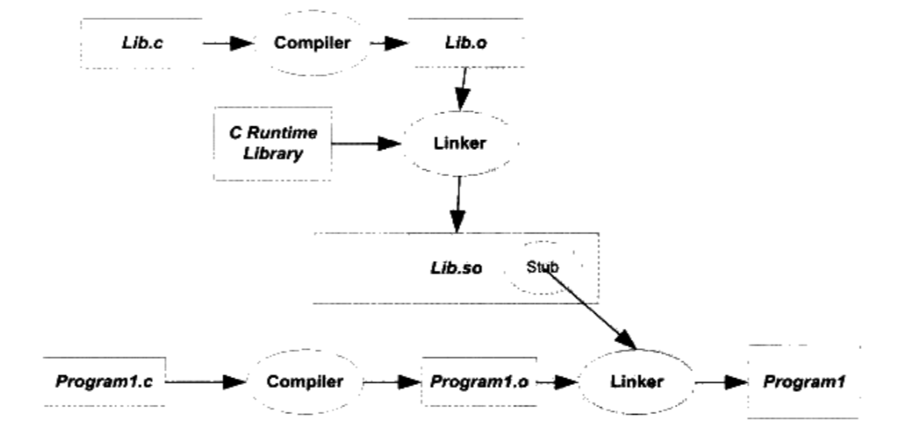
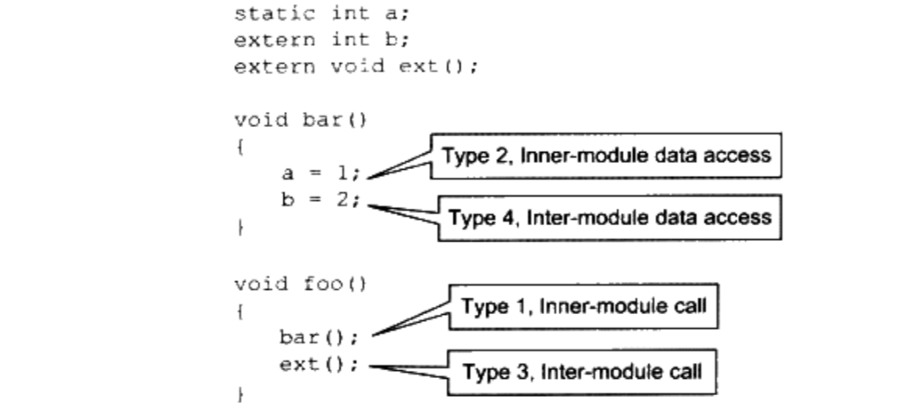
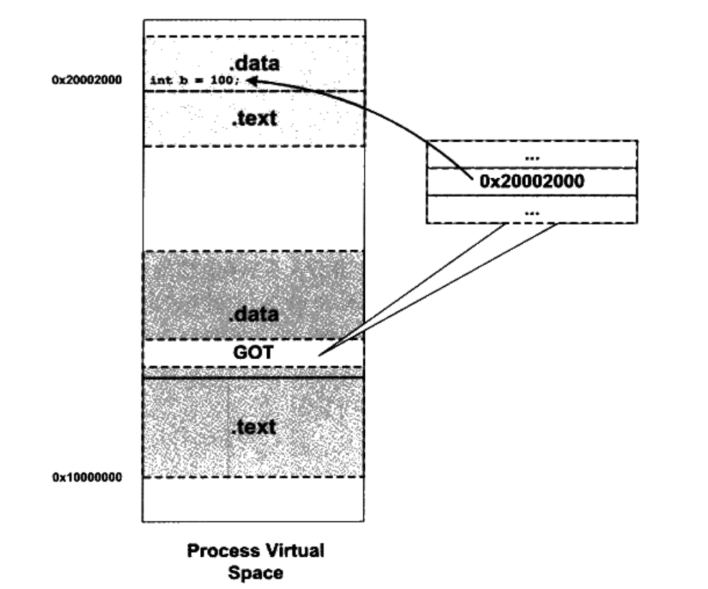

Abstract
从开始接触编译系统的学习已经快半年了，有些心得总结一下。
什么是编译系统？我想从两个角度谈一下：
首先从技术角度来讲，广义的编译系统负责将高级语言转换成为CPU可执行的二进制机器代码。编译系统包括编译器， 汇编器，静态/动态链接器，操作系统装载器以及运行库。
- 编译器： 是系统前半部分的核心，负责将源文件.c转换成为汇编文件.s。
- 汇编/链接/装载器：是系统后半部分的核心，主要是将.s转换为二进制ELF文件并进一步围绕ELF处理。
- 运行库：是操作系统层面用来支持高级语言运行环境比如内存池，标准API等的库文件。
然后从专业的角度来讲，我觉得可以分为系统层面和算法优化层面，系统层面主要是整个编译框架比如LLVM，核心是和操作系统交互的部分，这部分内容是编译器工程师的基本功，需要掌握细节。而算法优化层面指的是编译优化——编译器工程师的最理想的方向就是做优化，这一部分需要精通，从静态单赋值SSA等传统的静态分析优化到现在主流的深度学习推理引擎比如TVM等。
本文主要是对系统层面的学习，对系统层面的学习止步于对LLVM编译框架的使用和源代码阅读。
思路
本文主要分为三个部分，编译，ELF以及库文件。
首先简单介绍一下编译器的整体框架和编译流程。
**核心部分是学习*nix操作系统下的ELF文件的格式——普通c/c++高级程序在目标文件中是如何存储的；目标文件是如何被链接器链接在一起，并且形成可执行文件的过程。目标文件在链接时符号处理，重定位和地址分配如何进行。可执行文件如何被装载并且执行，可执行文件与进程的虚拟空间之间如何映射。讲解动态链接。 **
最后讲解一下运行库的原理和操作系统与编译系统交互的部分。
编译器
编译器分为前端和后端，直观上讲就是将源语言形式化的表示并翻译成为汇编目标语言。前端主要有：
词法分析器
- 语法分析器，
语义分析器
等完成源语言的语法推导，语义处理，然后将特定信息收集到符号表中，不同的编译器前端会生成不同的中间表示——比如LLVM IR就是一种非常重要的中间代码。
后端主要是：
寄存器分配
指令选择
指令调度
后端和目标机的关系比较紧密，也是优化的重点平台。
汇编器
当编译器将源文件翻译成为汇编语言之后，.s文件需要进一步的被汇编器进行转换成为可重定位目标文件（Relocatable File）。
因为汇编语言本质上就是助记符，汇编器就是将汇编文件翻译成为机器可执行的初步的二进制文件，这里的初步是汇编器汇编之后生成的.o文件还不能直接在操作系统中运行，这是因为.o文件中很多符号和变量的地址都没有确定——属于相对地址，所以无法加载到进程地址空间中，而且其运行还需要操作系统提供的运行库提供支持，这一切都需要链接器来完成。所以.o文件又称为可重定位目标文件。
从.s文件翻译成为.o文件，必须按照特定指令集的机器码，还有ELF文件的格式来转换，实现起来不是很难——需要精通目标机器的体系结构，以及目标机器的ELF文件格式。这里不涉及体系结构的知识。
ELF
ELF简介
其实从汇编器的实现中就已经用到了ELF的知识。
ELF可以说是编译系统工具链中的最重要的文件格式了，离开编译器之后的所有编译步骤几乎都和ELF相关或者围绕ELF展开，所以对它的研究非常有意义。
最早是由Unix System V Release3提出了COFF的概念以及使用规范。后来Windows基于COFF指定了PE格式标准，而Linux也以ELF作为基本格式。COFF的主要贡献就是提供了“段segment”的概念。
ELF类型
根据ELF文件标准，可以分为下面4类：
| ELF文件类型 | 说明 | 实例 |
|---|---|---|
| 可重定位目标文件(Relocatable File) | 由汇编器生成的.o文件，又被称为目标文件，因为需要连接重定位其文件中的符号地址所以叫Relocatable；另外，静态链接库.a其实也是使用ar程序将很多.o文件压缩并对其进行索引和编号。所以也算此类型。 | Linux下的.o文件，.a静态库文件；Windows下的.obj，.lib静态库文件 |
| 可执行文件(Executable File) | 是可以直接执行的程序，又被称为可执行文件。 | /usr/bash文件；Windows下的.exe |
| 共享目标文件(Shared Object File) | 共享就是动态链接的本质。其可以被链接器继续链接生成新的目标文件；也可以和可执行文件结合，作为进程映像的一部分来运行。 | Linux下的.so；Windows下的DLL |
| 核心转储文件(Core Dump File) | 当进程意外终止的时候，系统可以将该进程的地址空间及终止时的一些其他信息转储到核心转储文件中。 | Linux下的core dump |
ELF格式
分段
以目标文件.o为例介绍，目标文件中的内容至少含有编译后的机器指令代码和数据。按照COFF的历史规定，ELF格式也是按照段-segment来管理的。下面是ELF文件的基本格式：

从图中可以看到，ELF的开头是ELF Header，描述了整个文件的文件属性，包括文件是否可执行，是静态链接还是动态链接及入口地址（如果是可执行文件的话），目标硬件，操作系统等信息。ELF中第二重要的数据结构是Section Header table——描述文件中各个段的数组。段表描述了文件中各个段在文件中的偏移量以及段的属性等，从其中可以得到每个段的所有信息。ELF Header后面就是各个段的内容。分段的目的如下：
- 当指令和数据分离的时候，操作系统可以分配不同的读写权限便于管理
- 当指令和数据分离的时候，CPU缓存的命中率会更高
- 当指令和数据分离的时候，多个进程可以共享同一份指令，节省开销
ELF Header
是ELF文件最开头的一个结构体。它包含了描述整个文件的基本属性。因为ELF文件在各个平台下都通用，为了对每个成员的大小做出明确的规定以便保持兼容性。ELF使用typedef定义了一套自己的变量体系类似
Elf32_Addr这种。下面简单列出文件头中的关键信息：
- ELF魔数，文件机器字节长度，数据存储方式，版本，运行平台，
- ABI版本，ELF重定位类型，硬件平台，入口地址（OS加载的虚拟地址，可重定位目标文件该值为0），程序头入口和长度，
- Section Header table的位置（以偏移量的方式）和长度及段的数量
魔数：当年的UNIX是在PDP小型机器上开发的，而当时的系统加载可执行文件直接从第一个字节开始运行，人们一般将第一条指令设置为跳转指令，这个魔数就是当时的JMP指令，为了兼容性被保留下来。
Section Header table
段表描述了ELF的各个段segment的信息比如段名，段长度，段偏移以及段的读写权限等。 实现上，一般会采取一个结构体数组来表示段表。
- 段类型： 很多类型比如
.data,.text或者.rel,.string等 - 段标志位：表示该段在进程内虚拟地址空间中的属性
Relocation Table
目标文件中代码段和数据段那些对绝对地址的引用，需要在链接的时候重定位。每一个需要重定位的位置，最后都会有一个相应的重定位表比如
.rel.txt,.rel.data等。
Sections
.data: 保存初始化的全局变量和局部静态变量.bss: 保存未初始化的全局变量和局部静态变量.data: 保存代码段，等等
整个ELF文件有很多段比如字符串段，调试信息段strip等。包括在不同的平台标准上ELF格式都不同，这里不展开说了。
链接器
链接的本质就是要把多个不同的目标文件之间相互“粘”在一起——实际上就是目标文件之间地址的引用，及对函数和变量的地址的引用。
符号
在链接过程中，每一个ELF目标文件都会有一个相应的符号表，这个符号表对应ELF中的一个段
.symtab，这个表里记录了目标文件所用到的所有符号，每个定义的符号有一个符号值，对于变量和函数来说该值就是其地址。ELF的符号可以大致分为：
- 定义在目标文件中的全局符号
- 在目标文件内中引用的全局符号，又称为外部符号
- 段名
- 局部符号
- 链接器在生成可执行文件的时候，自行定义的特殊符号比如程序起始地址
__executable_start其中最重要的就是全局符号，因为其他的符号只是在目标文件中可见，而全局符号的作用域是跨文件的。
UNIX系统通过符号修饰和函数签名机制防止不同目标文件中的符号名称冲突。
(强/弱符号)(定义/引用)
编译器默认函数和初始化了的全局变量为强符号，未初始化的全局变量为弱符号。强符号和弱符号都是针对定义来说的，不是针对符号的引用。
- 不同的目标文件中不允许有同名的强符号
- 强符号可以屏蔽弱符号
而当外部变量的符号引用在目标文件被链接成为可执行文件时，如果是强引用，如果定义不存在则报错，而弱引用不会报错。强/弱引用一般用于库文件的链接过程。
静态链接
链接器一般都采用Two-pass Linking的方式：
- 空间与地址分配： 扫描所有的输入文件，获得它们各个段的长度，属性和位置，并将输入目标文件中的符号表中的所有符号定义和符号引用收集起来，统一放到一个全局符号表。
- 符号解析与重定位： 读取输入文件中段的数据，重定位信息；进行符号解析与重定位，调整代码中的地址。
- 各个段中的符号地址
- 代码中的地址引用
空间与地址分配
链接器能够获得所有输入目标文件的段长度，并且将它们合并，计算出输出文件中各个段合并后的长度和位置，并建立映射关系。

符号解析与重定位
这里有两部分，符号的地址和代码中的地址。其中链接器在完成地址和空间分配之后就可以确定所有符号的虚拟地址了，而链接器就可以根据符号的地址(通过查找由所有输入目标文件的符号表组成的全局符号表)对每个需要重定位的指令——即会用到外部符号的指令进行地址修正。
重定位表
链接器通过ELF文件中的重定位表来完成指令中地址的调整。
ABI
指的是和二进制兼容性有关的内容：
- 内置类型的大小和在存储器中的放置方式（大端，小端，对齐方式等）
- 组合类型（结构体，数组等）的存储方式和内存分布
- 外部符号与用户定义的符号之间的命名方式和解析方式
- 函数调用方式，比如参数入栈顺序，返回值如何保存等
- 堆栈的分布方式，比如参数和局部变量在堆栈中的位置，参数传递方式等
- 寄存器使用约定
静态链接库
静态链接库实际上就是一组目标文件的集合。即很多目标文件经过压缩打包之后的一个文件。

装载
虚拟地址空间
首先32位CPU指的是CPU的数据线是32位的，但是其地址线不一定只有32位，PAE地址扩展方式修改了页映射的方式使得可以访问到更多的物理内存。而操作系统提供一个窗口映射的方式，将这些额外的内存映射到进程地址空间中。应用程序可以根据需要来申请和映射，比如Linux中的mmap系统调用。
关于现代操作系统的虚拟内存管理机制这里不展开介绍。
内核装载ELF可执行文件
一共有如下四个步骤：
进程创建
第一步是创建一个独立的虚拟地址空间。
创建虚拟空间实际上并不是创建空间而是创建映射函数所需要的相应的数据结构。在i386的Linux下，创建虚拟地址空间实际上就是分配一个页目录就可以了，甚至不设置页映射关系——这些等到后面程序发生缺页中断的时候再进行设置（当程序发生了页错误，操作系统将从物理内存中分配一个物理页，然后将该“缺页”从磁盘中读取到内存中，在设置缺页和物理页框的映射关系）。
这一步本质上就是完成虚拟空间到物理内存的映射关系。
完成ELF和进程的映射
第二步是读取可执行文件头，并且建立虚拟空间与可执行文件的映射关系。
很明显，这种映射关系是保存在操作系统中的一个数据结构（类似页目录）。Linux中将进程虚拟空间中的一个段叫做虚拟内存区域（VMA，Virtual Memory Area）。操作系统在内部保存这种VMA结构，就是因为当程序发生段错误的时候，可以通过查找这样一个数据结构来定位错误页在可执行文件中的位置。
运行
第三步是将CPU的指令寄存器设置成可执行文件的入口地址，启动运行。
操作系统进行内核堆栈和用户堆栈的切换，CPU运行权限的切换，然后设置CPU的指令寄存器并将控制权交给进程。
缺页中断
在上述步骤都完成之后，其实可执行文件的真正指令和数据都没有被装载进内存中。操作系统只是通过可执行文件头部的信息建立起来可执行文件和进程虚存之间的映射关系而已。
当发生一次缺页中断的时候，操作系统将查询这个数据结构，然后找到空页面所在的VMA ，计算出相应的页面在可执行文件中的偏移，然后在物理内存中分配一个物理页面，将进程中该虚拟页与物理页之间建立映射关系，完成真正的装载。

进程虚拟地址空间分布
ELF文件链接视图和执行视图
操作系统装载ELF可执行文件的时候是以段segment为单位的，一般只关心跟装载有关的问题，最主要的是段的权限(可读，可写，可执行)。ELF文件中，段的权限往往只有为数不多的几种组合，基本上是三种：
- 以代码段为代表的权限为可读可执行的段
- 以数据段和BSS段为代表的权限为可读可写的段
- 以只读数据段为代表的权限为只读的段
一般对于相同权限的段，把它们合并在一起作为一个段进行映射——成为segment。多个sections组合成为segment，装载的时候一个segment在进程虚拟空间中只有一个对应的VMA，这样可以明显的减少内部碎片，从而节省了内存空间。
所以对于系统来讲，section是链接视图，而segment是执行视图。
在操作系统装载的时候，VMA除了用来映射可执行文件中的各个segment以外，事实上进程虚拟空间中的堆栈也是以VMA的形式存在的。所以总结一下，操作系统通过给进程空间划分出一个个VMA来管理进程的虚拟空间，基本原则就是相同权限属性的，有相同映像文件的映射成一个VMA，一个进程基本上可以分为如下几种VMA区域：
- 代码VMA，权限只读、可执行；有映像文件
- 数据VMA，权限可读写，可执行；有映像文件
- 堆VMA，权限可读写，可执行；无映像文件，匿名，可向上扩展
- 栈VMA，权限可读写，不可执行；无映像文件，匿名，可向下扩展

段地址对齐
因为装载过程是通过虚拟内存的页映射机制完成的。假设页大小默认为4096Bytes，所以如果要将一段物理内存和进程虚拟地址空间之间建立映射关系，这段内存空间的长度必须是4K的整数倍，并且这段空间在物理内存和进程虚拟地址空间中的起始地址必须是4096的整数倍。 系统为了防止碎片化，也会采取一些优化的映射方案，这里不深入了。
动态链接
静态链接有空间浪费和更新困难两个问题。
共享文件在内存中只存在一份，这样不仅仅节省内存，还增加CPU缓存的命中率。ELF动态链接文件称为.so共享对象文件，而Windows动态链接库称为.dll文件。
当程序被装载的时候，系统的动态链接器会将程序所需要的所有动态链接库装载到进程的地址空间，并且将程序中所有未决议的符号绑定到相应的动态链接库中，并进行重定位工作。也就是说动态链接器把链接这个过程从本来的程序装载前被推迟到装载的时候。这样的话动态链接与静态链接相比，性能损失大约在5%以下。这点损失换取空间上的节省和程序构建和升级时的灵活性，是想当值得的。

地址无关代码
由性质可以知道共享对象在编译的时候不能假设自己在进程虚拟地址空间中的位置。而可执行文件基本可以确定自己在虚拟地址空间中的起始位置。这里注意动态链接的模块概念：可执行文件模块和正常静态链接一样，而共享对象模块即动态链接库就不行。
那共享对象在被加载的时候，如何确定它在进程虚拟地址空间中的位置？
这里提出一个问题：
如果直接将目标文件推迟到装载的时候再链接可以吗？答案是不行。动态链接模块被装载映射到虚拟空间之后，指令部分是在多个进程中共享的，由于装载的时候重定位的方法需要修改指令（会影响代码段中的绝对地址引用），所以没有办法做到同一份指令被多个进程共享。
所以最终的解决办法就是：将共享的指令部分中那些需要被修改的部分分离出来，跟数据部分放在一起，这样指令部分就可以保持不变，而数据部分可以在每个进程中拥有一份副本——所谓地址无关代码(PIC, Pisition-independent Code)技术。
代码段地址无关代码
这里把共享对象模块中的地址引用按照是否跨模块分为两类：模块内部引用和模块外部引用；按照不同的引用方式有可以分为指令引用和数据访问。
- 模块内部的函数调用，跳转等
- 模块内部的数据访问，比如模块中定义的全局变量，静态变量
- 模块外部的函数调用，跳转等
- 模块外部的数据访问，比如模块中定义的全局变量，静态变量

这里提一下模块间，因为这些全局变量的地址是跟模块装载地址有关的。ELF的做法就是在数据段中建立一个指向这些变量的指针数组，也被称为全局偏离表(Global Offset Table GOT)，当代码需要引用该全局变量的时候，可以通过GOT中相对应的项间接引用。

链接器在装载模块的时候会查找每个变量所在的地址，然后填充GOT中的各个项，以确保每个指针所指向的地址正确。GOT在数据段所以可被修改。总结一下：
| 指令跳转，调用 | 数据访问 | |
|---|---|---|
| 模块内部 | 相对跳转和调用 | 相对地址访问 |
| 模块外部 | 间接跳转和调用GOT | 间接访问GOT |
共享模块的全局变量问题
这里需要注意，如果一个模块引用了一个定义在共享对象的全局变量的时候。编译器无法判断该global是在同一个模块的其他目标文件中，还是定义在另一个共享对象中。
解决办法是所有的全局变量都通过GOT访问。
数据段地址无关代码
数据段中也会出现绝对地址引用的情况：
2
3
> static int *p = &a;
>
这里的指针p就是一个绝对地址。一般来说，如果发现数据段中有绝对地址引用，编译器和链接器会产生一个重定位表。
对于可执行文件来说，默认情况下，如果可执行文件是动态链接的，那么编译器会使用PIC的方法来产生可执行文件的代码段部分，以便于不同的进程能够共享代码段，节省内存。所以一般动态链接的可执行文件中会有
.got段。
动态链接过程
动态链接情况下，可执行文件的装载与静态链接情况基本一样。首先操作系统会读取可执行文件的头部，检查文件的合法性，然后文件头中读取每个“Segment”的虚拟地址，文件地址和属性，并将它们映射到进程虚拟空间的相应位置，这些步骤跟前面的静态链接情况下的装载基本无异。在静态链接情况下，操作系统接着就可以把控制权转交给可执行文件的入口地址，然后程序开始执行，一切很顺利。
但是在动态链接下，操作系统还不能再装载完可执行文件之后就把控制权交给可执行文件，因为我们知道可执行文件依赖于很多共享对象，这时候可执行文件里对于很多外部符号的引用还处于无效地址的状态，即还没有跟相应的共享对象中的实际位置链接起来。所以在映射完可执行文件之后，操作系统会其中一个动态链接器。
动态链接分为三步：启动动态链接器本身，然后装载所有需要的共享对象，最后是重定位和初始化。
共享库
因为动态链接的诸多优点，操作系统中一般有很多共享对象——按照合理的组织和使用方式构建起来的共享库。共享库的更新会影响ABI的使用。
运行库
经过前面的介绍，基本上编译系统的概念都介绍完了。下面的部分涉及操作系统接口，也只是简单的介绍一下。
操作系统装载程序之后，首先运行的代码并不是
main的第一行，而是某些别的代码，这些代码负责准备好main函数执行所需要的环境，并且负责调用main函数，这时候才可以申请内存，使用系统调用，触发异常，访问I/O。在函数返回之后会记录main的返回值，调用atexit注册的函数，然后结束进程。运行这些代码的函数成为入口函数或者入口点。这些都是运行库的一部分。个人理解运行库的概念就是操作系统和应用层的接口，区别于系统调用，比如Glibc那样。
常用二进制工具(基于LLVM)
| 命令 | 说明 |
|---|---|
llvm-size |
查看ELF文件的各个段的大小 |
llvm-readelf -h |
查看ELF Header(部分) |
llvm-readelf -S |
查看ELF Header(全部) |
llvm-objdump -s |
将所有ELF段以十六进制的方式打印 |
llvm-objdump -d |
将所有指令段反汇编 字节寻址,小端 |
llvm-nm |
查看ELF文件的符号表 |
c++filt |
解析函数签名 |
ld a.o b.o -e main -o ab |
直接使用链接器生成可执行文件ab（将main函数作为程序入口） |
llvm-objdump -r |
查看目标文件的重定位表 |
ar -t libc.a |
查看静态链接库包含了那些文件 |
clang -fPIC -shared lib.so lib.c |
编译一个共享对象文件 |